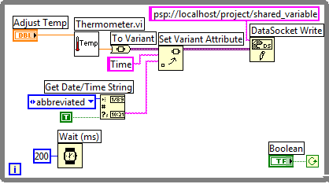
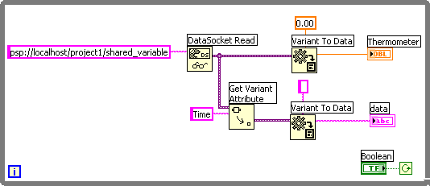

Use variant data when a VI or other application that programmatically reads data cannot convert the data back into its original data type, such as when you read data from another application. You also can use variant data to add an attribute, such as a time stamp or warning, to data you read or write when the data types do not permit this additional attribute.
You can use the To Variant function to convert the data you write to a data connection to variant data programmatically. The following block diagram continuously acquires a temperature reading, converts the data to variant data, and adds a time stamp as an attribute to the data.

When another VI reads the live data, the VI must convert the variant data to a data type it can manipulate. The following block diagram continually reads temperature data, converts the variant data into a temperature reading, retrieves the time stamp attribute associated with each reading, and displays the temperature and the time stamp on the front panel.
